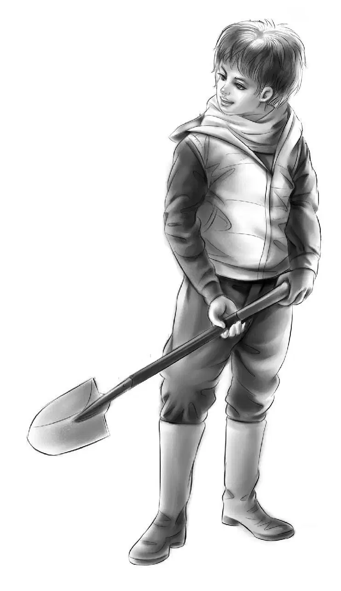
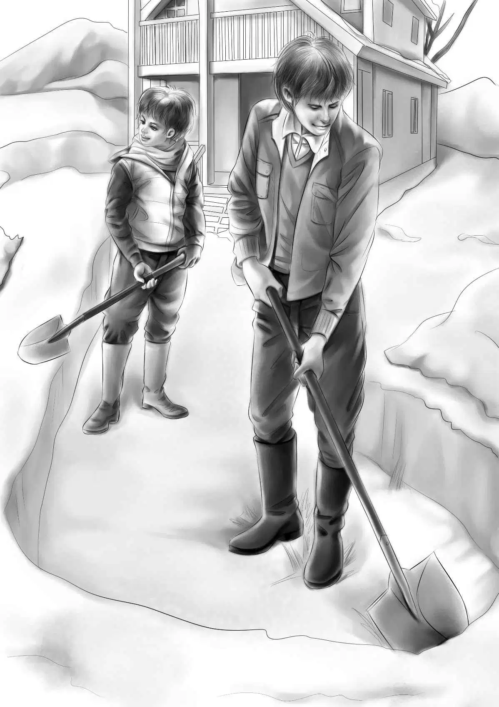
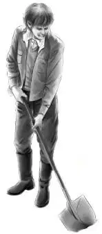

The next day the weather had changed. The sky was very gray. There was no sun. But the Aldens started out for the store.
“It’s much colder today,” Violet said. She put up her hood and tied it under her chin.
Jessie said,“No blue sky today. Maybe yesterday was a weather breeder,after all. You remember Barbara said she thought a storm was coming.”
“Well,never mind,” said Benny. “After all,it’s too early for snow. And the radio report said the storm would not hit us.”
Benny trotted along with Watch. They walked faster this time. They did not stop to look at anything on the path.
“Two and a half miles is a long way on a chilly day,” said Jessie,“but it’s just a nice walk in good weather. We’d better not stay very long at the store,Henry.”
“Right,” agreed Henry. He looked up at the sky again. “The clouds seem to be getting heavier,”he said. “I hope we can fix that roof before it rains again.”
At last the four Aldens reached the Nelsons’ store. This time there were a few other customers in the store.They were getting big bags of groceries.
A woman smiled at Jessie. She said,“We think we’ll have rain soon,so I’m buying a lot of things. Maybe you folks ought to do the same. Sometimes it rains here for days.”
“Thank you,” said Jessie gratefully. “We’re getting supplies,too. We have to walk over two miles to get here. Henry,pick up some canned meat and bacon while you are on that side,and some spaghetti and tomato sauce. I’ll get more chocolate and hot dogs and hamburgers and dry milk.”
“I’ve got more dog food,” called Benny.
The other people went out with their bags. Tom said to Henry,“You see we don’t get many customers now. The summer people have gone,and many people have moved away for good.I think I’ll have to move if I want to make a living.”
“Don’t move before we do！” Benny said.
As he spoke,Mrs. Nelson came downstairs. She said,“I think it is going to snow. It feels just like it to me.” She frowned. She looked worried.
“Snow！”Benny said.“It’s too early for snow.”
“Yes,it’s too early,but just the same you had better go right back. You don’t want to get caught on the trail if snow comes. If you wait here you may.”
“That’s right,Mrs. Nelson,” said Henry. “Put up your hoods,everybody,and tie your scarves on tight.”
Mrs. Nelson took a quick step toward the girls. She said,“Oh,Jessie,you know I want you to stay,don’t you？ I don’t want you to hurry away！”
“Oh,Barbara,we do,” answered Jessie. “Of course we know it. But we mustn’t get caught in the storm. Now here we go. Got everything？”
Watch was on his way as soon as the door was opened. The Aldens wasted no time. They walked along the path as fast as they could. Soon they were out of sight of the store.
“Not too fast,Ben,” called Henry. “Save your fast walking for the end,like a race.”
Benny slowed down. He began to think of the secret code and of Tom Nelson moving away. “Is Tom Nelson running away？” he wondered. Then suddenly he turned around. “What do you know,Henry. It’s snowing！” he said.
“It is！” Jessie said. “Maybe it will stop as suddenly as it began.”
But it did not. It snowed harder. The snowflakeswere small and fine. Even through the thick trees the snow fell faster and faster.
“I wouldn’t like to be stuck in the snow！” exclaimed Benny. “Nobody would know where we are！”
“We won’t get stuck,Ben,” Henry told him. “Don’t worry about that. You couldn’t really get stuck in the deep snow because we can walk two miles before the snow can get that deep. Just keep going.”
Watch was the one who trotted along steadily,without hurrying. He never looked to the right or to the left,just straight ahead.
“Good boy,” said Benny. Watch didn’t even turn his ears.
“I’d never believe this,” said Henry,“if I didn’t see it. The snow is already an inch deep.”
Jessie added,“Remember,Henry,this is in the woods,too. It must be deeper than this where there are no trees. Oh,I’m just about frozen. Isn’t it cold？”
“Well,we have enough stuff to eat when we get to the cabin,” said Benny. “If we ever get there. We can make our food last a long time if we get snowed in.”
Uphill and downhill they went,bowing their heads in the driving snow. The flakes were bigger and bigger. The children could hardly see the path. They slipped a few times,but nobody fell.
Watch’s legs seemed to grow shorter and shorter. He could not trot now,he had to hop along over the deep snow.
But they made it. When Henry unlocked the cabin door the snow was four inches deep on the step. They stamped their feet and went in and locked the door behind them.
“Well！” said Jessie.
Nobody else said a word. They all took off their jackets and hung them on nails to dry. Henry fixed the fire,saying nothing. It was already twelve o’clock. Jessie got a pan of water from the faucet and put it on the stove to heat. She thought her family needed some hot chocolate. They thought so,too,when they smelled it.
Violet got out the frying pan and soon bacon was frying. When they sat down to eat,Henry said,“Now I have something to say. This is a very early snow. Nobody expected it. It can’t possibly last long and we are in no danger.”

Jessie said,“Just one thing bothers me. Grandfather must be worrying about us,and the Nelsons probably are,too.”

“But we can’t do a thing about it,” said Henry.“We can’t get down to the road and we can’t send a message.”
“So let’s enjoy it！” finished Benny.
“That’s exactly what I mean,” said Henry,smiling at his brother. “I’m going out in the snow soon to shovel the steps and a narrow path around the house. Then I’m going to clear a small place in the back of the house under the window where the trees were cut down. Right under the bird feeder.”
“I’ll help you,” said Benny. “There are two shovels.”
“Thanks,Ben.”
It was cold and still snowing hard. The two boys managed to shovel an open square under the window. They threw the snow to one side.
Henry said,“This cleared place will fill up right away,but we can shovel it out again.”
“It will be easier the second time,” Benny said. “Not so deep.”
Henry looked up at the roof to see the squirrels’ hole,but he could hardly see the roof！ It was deep with white snow. He said,“I guess the squirrels won’t have to worry for a while. I’m not going up on the roof today,hole or no hole.”
“Another noisy night,then,” said Benny. “We could invite the squirrels down and play with them,if we didn’t have Watch.”
“Now,Ben,don’t get any ideas,” said his big brother. “I’d just like to know how big that hole is.”
The hole was simply enormous. But the Aldens did not know that yet.